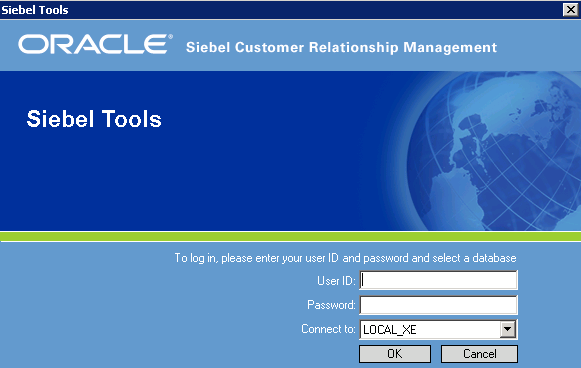
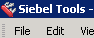
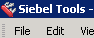

import sys
import os
f=open("accounts.txt","r")
lines=f.readlines()
username=lines[0].rstrip('\n')
password=lines[1].rstrip('\n')
server=lines[2].rstrip('\n')
f.close()
#os.system('"D:\Siebel\8.1.1.16.0\Tools\BIN\siebdev.exe"')
vcCMD = '"D:\Siebel\8.1.1.16.0\Tools\BIN\siebdev.exe"'
App.open('CMD /C ' + vcCMD)
wait(2)
click()
#click("1533805805639.png")
#wait("Search.png")
#wait(1)
#type("Siebel Tools"+Key.ENTER)
wait(3)
wait()
wait()
type(username+Key.TAB)
wait()
type(password+Key.TAB)
wait(1)
type(server+Key.ENTER)
wait( )
type(Key.ENTER)
wait(20)
wait(, 200)
wait(20)
)
type(Key.ENTER)
wait(20)
wait(, 200)
wait(20)